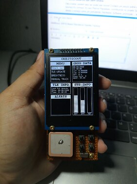

ORBITSCOUT: STANDALONE SATELLITE TRACKER
DATA: 2025-04-13 | LINGUAGEM: C | LICENÇA: MIT | PLATAFORMA: ESP32

Visão Geral
OrbitScout é um projeto open-source que transforma um microcontrolador ESP32 em uma estação de
acompanhamento de satélites. Com uma interface gráfica em um display TFT, módulos de GPS, sensor de orientação e
monitoramento de bateria, o OrbitScout permite prever passagens de satélites, visualizar trajetórias em tempo real e
até receber notificações sonoras quando uma passagem se aproxima.
Funcionalidades
- Rastreamento em Tempo Real: Utiliza o modelo SGP4 para calcular a posição dos satélites a
partir dos dados TLE
- Integração com GPS: Obtém a localização exata do usuário para cálculos precisos
- Sensoriamento de Orientação: Sensor BNO055 para rastreamento manual
- Interface Gráfica Intuitiva: Menus interativos com barras de progresso e visualizações
dinâmicas
- Controle de Backlight: Ajuste de brilho via botões físicos
- Monitoramento de Bateria: Leitura analógica com conversão para tensão e porcentagem
- Conectividade WiFi: Portal cativo para configuração e download automático de TLEs
- Sistema de Notificações: Alertas visuais e sonoros para passagens
Requisitos de Hardware
- Microcontrolador: ESP32
- Display: TFT compatível com TFT_eSPI
- GPS: Módulo Neo-6M
- Sensor de Orientação: Adafruit BNO055
- Buzzer: Para alertas sonoros
- Botões Físicos: NEXT, PREV, SELECT, BACK
Bibliotecas Necessárias
- TFT_eSPI
- TinyGPSPlus
- Adafruit_BNO055
- TimeLib
- WiFiManager
- Sgp4
Fontes de TLE Suportadas
O sistema permite escolher entre diversas fontes para manter os dados de órbita atualizados: NOAA, Weather,
Engineering, Amateur, etc.
[ > ACESSAR CÓDIGO FONTE NO GITHUB ]